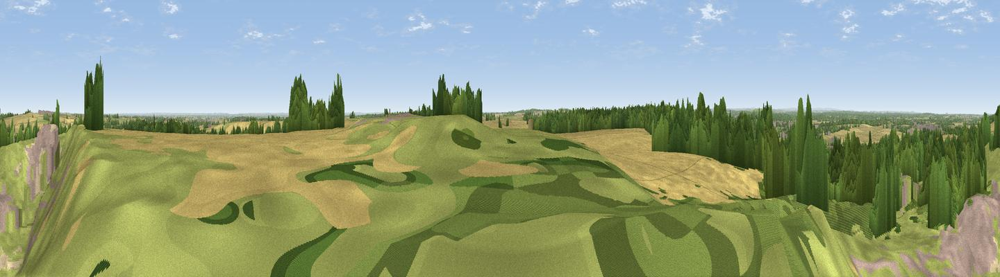

Golden Hill
#26329 in England · top 36% of its area beats it · near ByfieldWhere it is
The exact computed spot (SP 50875 52175). Click the marker for map links.
The view, rendered

A 360° render of this exact spot computed from the terrain model, tree cover and land cover — summer colours, afternoon light, calibrated against photographs of famous viewpoints. Real trees, hedges and buildings will differ in detail.
The panorama
Grey silhouette: terrain skyline in each direction (720 bearings, Earth curvature and refraction included). Dashed green: skyline with trees (+15 m) and buildings (+8 m) as obstacles. Blue strip: how far the ground is visible on each bearing.
Where the view opens
Wedge length = distance to the farthest visible ground on that bearing (vegetation-aware). Rings at 10, 25 and 50 km.
What fills the view
44% cropland · 38% grassland · 13% woodland · 2% built-up · 2% water
Angular shares of the visible panorama (visual magnitude), not map area. Landscape diversity 0.50 (0–1 Shannon).
Key numbers
More beautiful places nearby
The staircase of upgrades: each row has a higher view potential than everything closer. Driving times are estimates from straight-line distance, calibrated against real road routing — check an actual route before setting out.
| Place | Direction | Drive | Score |
|---|---|---|---|
| Viewpoint near Aston le Walls | WSW · 0 km | ~1 min | 53.6 |
| Black Down | N · 4 km | ~9 min | 64.5 |
| Big Hill - Staverton Clump | NNE · 10 km | ~19 min | 68.4 |
| Viewpoint near Northend | W · 11 km | ~21 min | 70.3 |
| Viewpoint near Radway | WSW · 13 km | ~24 min | 71.7 |
| Viewpoint near Ilmington | WSW · 32 km | ~49 min | 72.6 |
| Viewpoint near Meon Vale | W · 34 km | ~52 min | 77.0 |
| Broadway Hill | WSW · 43 km | ~62 min | 77.7 |
52.16551, -1.25762 · source: osm peak · position refined by local search. Computed location — check access rights before visiting.